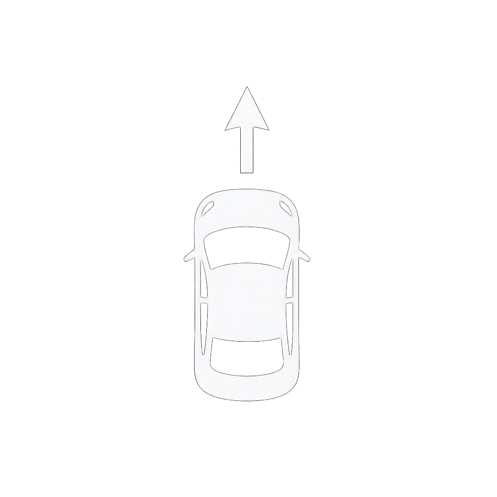

Sesli Komutlu Araç Kontrol Paneli

Gerçek Zamanlı Araç Durumu
Beklemede...
Komutlar
Komut bekleniyor...
Görev Geçmişi
Veri bekleniyor...
Ses Tanıma Çıktısı
Bilinmiyor
Sesli komut bekleniyor...
Sistem Kontrolleri
Başlat
Durdur
Sistem Kontrolleri
▶ Devam
⏸ Duraklat